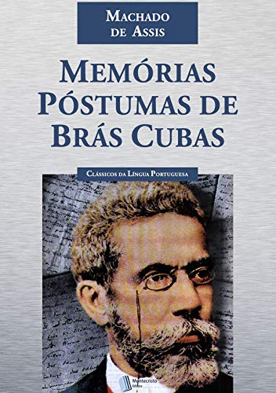

Principais obras de Machado de Assis
1- Desencantos (1861) — teatro
2- O caminho da porta (1863) — teatro
3- O protocolo (1863) — teatro
4- Crisálidas (1864) — poesia
5- As forcas caudinas (1865) — teatro
6- Os deuses de casaca (1866) — teatro
7- Contos fluminenses (1870) — contos
8- Falenas (1870) — poesia
9- Ressurreição (1872) — romance
10- Memórias póstumas de Brás Cubas (1881) — romance